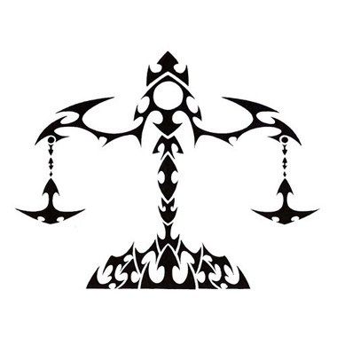

Libra / Tula Rashi
Master Planet : Venus / Shukra
Ra, Rha ,Ri, Ree, Rhi ,Ru, Roo, Rhu ,Rey, Ray, Rhe ,Ro, Rau, Rho, Rhau ,Ta ,Tii, Tee, Thee, Thii ,Tu, Thu, Tho ,Te, The, Tay
The Librans are usually thin and tall. They have conspicuous veins. This sign includes the last two charans of Chitra, Swati and three charans of Vishakha Nakshatras.
They are logical with their nature and are dominated by balance and harmony. They are sensitive, curious, will - principled, gentle, critical, good in perception, but are intolerant. Charming and easily mixing with people around are their sterling qualities. They are pious and spiritual. They are logical and as such balance all their deeds and relations with logic.
They speak less but believe more in action. They are learned, intelligent, and helpful to others and do social work. They may have a thick nose but are attractive. They believe in religion. They are repellent to opposite sex. The early stages of their lives are usually marked with hardships, but destiny shines to them between 32-35 of their age.
Great people help them. They are likely to have skin disorders like boils etc. They impress people effortlessly. They are prone to kidney diseases. They marry usually rich spouse. They come up in life in their native place itself.